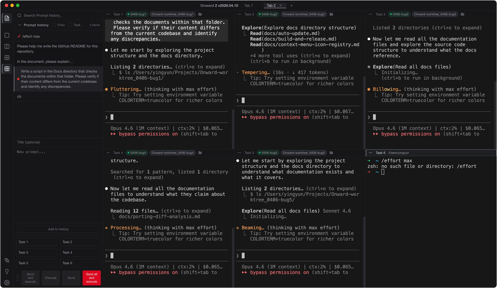
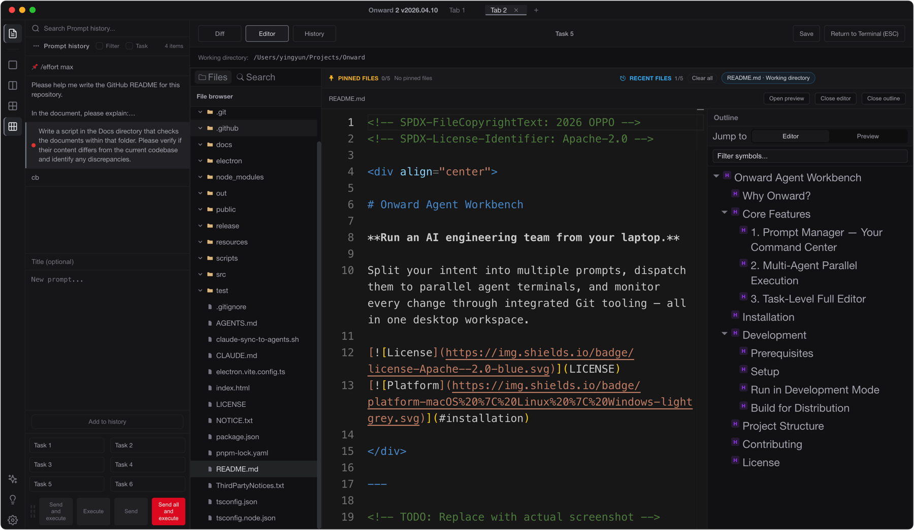

The desktop workspace where AI agents write code in parallel — and you lead the team.
Traditional IDEs are editor first — you type, the AI assists. Onward flips this around. Agents do the coding. You plan the work, dispatch prompts, and review what they built.

Write and arrange prompts before dispatching — plan work like a backlog. Schedule execution, color-tag priorities, and dispatch to agents as they become idle. Manage "what to do" separately from "who does it."
Run multiple AI agents side-by-side with configurable grid layouts. Broadcast dispatch to selected agents simultaneously. Each agent gets its own working directory, context, and history. Works with any CLI agent — Claude Code, Codex, or your custom toolchain.
After agents finish writing code, you review what changed. Each task gets a Monaco-powered editor with Git Diff viewer, Git History, global search, and Markdown preview. One workspace per task — complete visibility into what every agent did.
The editor is there when you need it — not as the starting point. Git Diff, commit history, and code editing in one integrated view per task.

Watch a real workflow: dispatching prompts to multiple agents, monitoring progress, and reviewing the results.
Download the latest release from GitHub for your platform.
github.com/OPPO-PersonalAI/Onward-Agent-Workbench/releasesxattr -cr "/Applications/Onward 2.app"